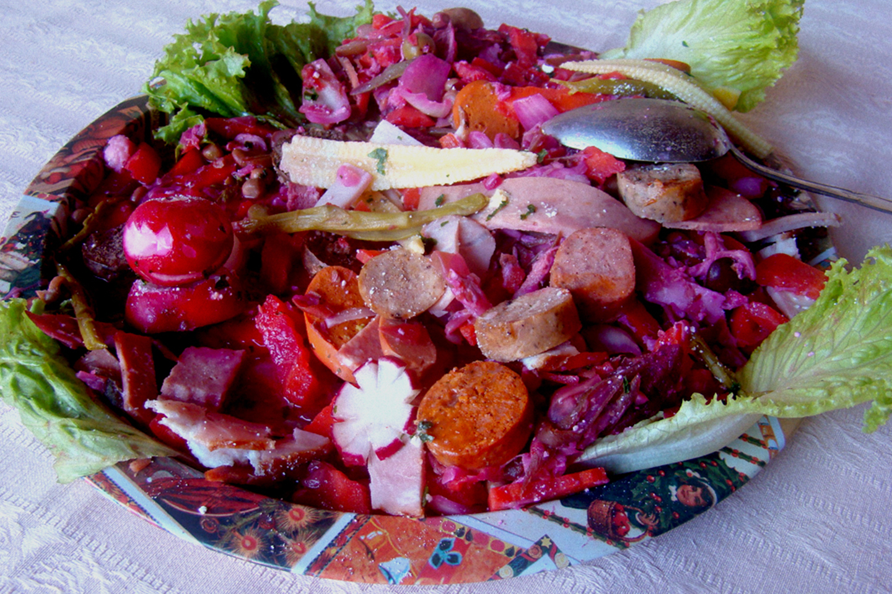

FIAMBRE ESTILO SAN MIGUEL DE ALLENDE

UNO DE LOS MUNICIPIOS MÁS HERMOSOS DE GUANAJUATO Y QUE NO PODÍA QUEDARSE ATRÁS CON PLATOS CARACTERÍSTICOS DE SU GASTRONOMÍA.
EL FIAMBRE ES MUY FAMOSO POR ESTOS LARES Y SE ELABORA CON POLLO, LENGUA DE RES, MANITAS DE CERDO, JÍCAMA, BETABEL, ACEITUNAS Y CACAHUATES SERVIDOS SOBRE UNA CAMA DE LECHUGA.
ES UN PLATILLO MUY TÍPICO Y FAMOSO DE SAN MIGUEL DE ALLENDE. TAMBIÉN INCLUYE OTRAS FRUTAS, COMO LA GUAYABA, EL AGUACATE Y EL PLÁTANO.